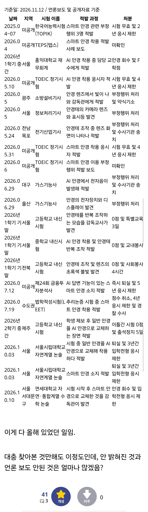

올해 걸린 것만 이정도

올해 걸린 것만 이정도
역시 부패 끝판왕 마을 답군.
무궁화 마을 ㅋㅋㅋ
와 시발 진짜 다들 시도하고 있었구나 나는 글래스 기능이 저렇게 좋아진 줄도 모르고 있었음...
중급닌자 시험 다음주에 제일 큰거 열린다
아..수능
이미 다 판짜놔서 올해는 그냥 간다
ㅅㅂ 나도 쓸걸 염병 검사도 안하드만
뭐든지 초창기에 빨리 해서 꿀 빨아야돼 진짜
걸리면 좆망
안걸리면 합격ㄷㄷ
전두광이가 되뷰렀어
징역 가는것도 아니고 도전 해볼만 ㅋㅋ
난 무조건 들킬거 같아서 시도하겠다는 생각 조차 안 했는데
앞으로는 렌즈 껴야지 별 수 있나
주식 사야하나
이쯤되면 안쓰는게 병신인데
실제업무에 시험과목 공부한다고 도움 좆도안되는것도 많고
Ai 안경 사용한 사람은 최소 ×20에서 넉넉잡아 x100이라봐도 무방할듯
걸렸을때 손해보다 안걸렸을때 보는 이득이 월등히 크니까.. ㅋㅋ
끝없는 자본주의와 한국 특유의 경쟁 심리가 활개치다보니까 치팅에 둔감해지는건지 중국 짱들처럼 되버리네 ㅅㅂ
사람사는세상 다 똑같은데 나라에 차이가 있겠냐 ㅋㅋ
리얼 중급 닌자시험 ㅋㅋㅋ
바퀴벌레 한마리가 보인다는 것은 이미 벽뒤에 드글드글하다는 뜻인데
이미 동일 세무 시험에서도 적당히만 쓴사람 꽤 많을듯
걸리면 잠깐 쉬기 안걸리면 평생자격 ㄷㄷ
수능앞두고 스마트글래스 판매랑 20000%증가했겠네
게임이랑 똑같네 중국인은 대놓고 핵을 쓰지만 한국인은 음습하게 핵을 쓰며 실력인 것처럼 행동한다
중급닌자 시험이 이렇게나 많았다니
알고보니 한국이 거대한 나뭇잎 마을이었나...!
벌레 새끼들이 저렇게 많다고?
와 ㅅㅂ 몇명이 꿀빤거여 대체
시발 ㅋㅋㅋㅋㅋㅋㅋㅋㅋㅋㅋㅋㅋㅋㅋ
조선시대마냥 잡아다가 곤장치고 달군 쇠로 이마에 낙인을 찍어야..
걸린것만 이정도고 앞으로 기술이 계속 발전하면...진짜 시험이란 행위를 전반적으로 손보지 않는 이상 가망없어보임...시험이 없어지는 세상이라...감이 안오네...어떤 시험이라도 의혹이 따라붙을텐데...아무리 기술이 발전해도 그걸 뚫는 기술이 또 나오는 상황이라서..어렵다...일단 문과 전문직은 다 작살났네...아마 지금까지와 다르게 자격증 취득 후 계속 자격 유지를 위한 시험들을 봐야 할 듯 근데 이것도 에이아이로 하면 되잖아 ㅋㅋ
씹초기에 치트쓴 애들이 승리자네
나뭇잎마을 닌자시험에선 안걸리면 인정이야